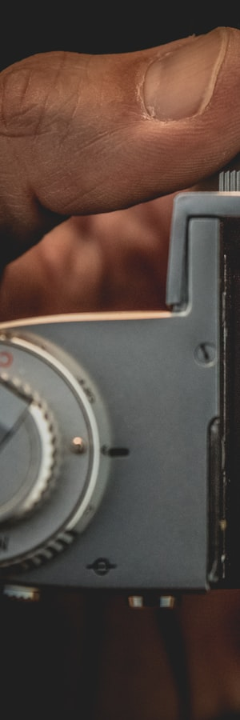
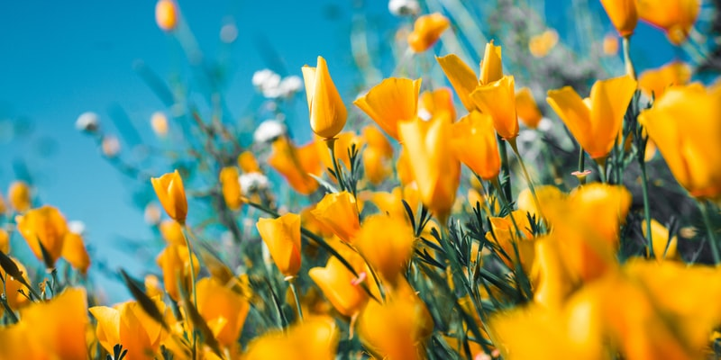
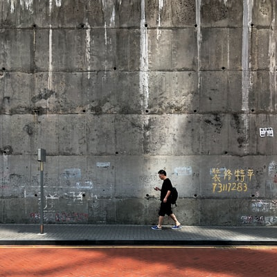
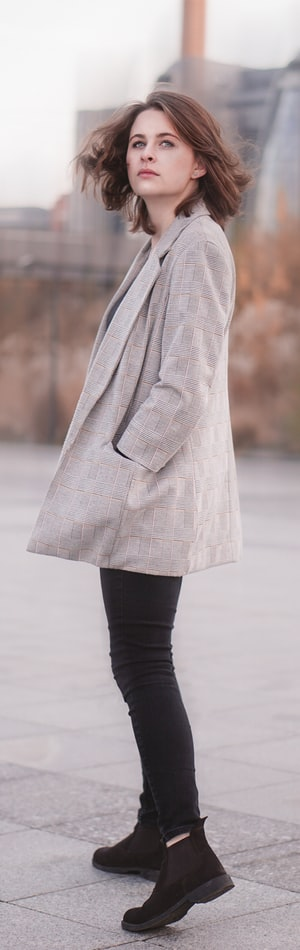
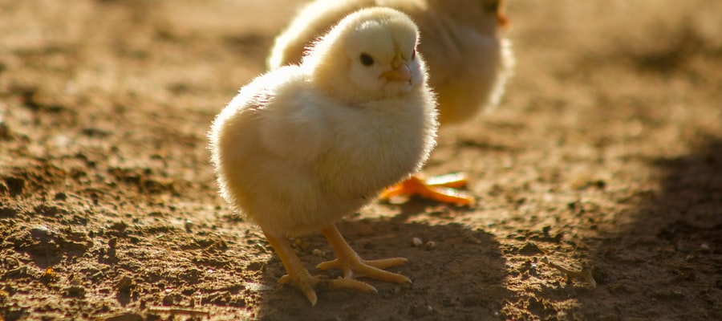

Animeyed II
Flora Borsi verschmilzt Tierbilder mit Selbstporträts. Dafür passt sie sich an die Physiognomie der Tiere an.
In diesem Portfolio zeigt die Ungarin, die in Budapest lebt, Motive aus ihrer Serie „Animeyed II.“. Der Titel ist ein Kofferwort aus „Animal“ und „eyed“. Am Set passte Borsi ihr Make-up und Styling bis hin in die feinen Details der Körpermerkmale der einzelnen Tierarten an. Für ihr Selbstporträt mit Dalmatiner schminkt sie sich beispielsweise mit schwarzen Tupfen. Bei anderen Tieren war die Frage des passenden Stylings schwieriger zu lösen, schauen Sie sich das Papageientaucher-Motiv im weiteren Verlauf des Portfolios an.
Im Shooting ist Flora Borsi Fotografin und Model in Personalunion, das birgt dann einige Herausforderungen am Set: „Es ist schon sehr schwer, den gewünschten Look zu erzielen, ohne zu wissen, ob die Pose gut ist oder nicht. Manchmal benutze ich ein Tablet, um zu sehen, ob die Brennweite in Ordnung ist.“ Am liebsten arbeitet sie mit der spiegellosen Mittelformatkamera Hasselblad X1D II 50C (50 Megapixel) in Kombination mit einer 45-Millimeter- oder 90-Millimeter-Festbrennweite. Die finalen Bilder produziert sie dann als Bildkompositionen in Photoshop.
Fragt man die junge Fotografin nach ihren Inspirationsquellen, nennt sie zwei Fotografen und einen Maler: US-Fotografin Annie Leibovitz (Jahrgang 1949) und der britische Modefotograf Tim Walker (Jahrgang 1970) sind weltbekannte und begnadete Porträtisten – beide inszenieren ihre Models gerne vor aufwändig gestalteten Kulissen, oft haben die Bilder eine surreale Note.
TECHNIK: Wildtiere richtig fotografieren
Ein Guide für erfolgreiche Schnappschüsse
Tiere in einer winterlichen Umgebung mit Schnee und Eis im Hintergrund sind ein Traummotiv vieler Hobbyfotografen. Neben dem klassischen Ansitz bei eiskaltem Wetter bieten verschiedene Veranstalter inzwischen Fotoverstecke mit komfortabler Ausstattung an
Ich werde euch nun einige Regeln und Tips aufzählen:
Fotoethik, Regeln und Gesetze beachten
- Denken Sie beim Fotografieren immer zuerst an das Tierwohl. Fragen Sie bei Ihrem Anbieter nach, womit die Tiere beispielsweise gefüttert werden. Es sollte sich um artgerechtes Futter handeln, nicht um Dinge wie Küchenabfälle oder Schokoriegel. Die Tiere sollten in einer natürlichen Art und Umgebung gefüttert werden und so, dass Sie sich nicht an den Menschen gewöhnen. Bären oder Wölfe sollten niemals in der Nähe von Siedlungen angefüttert werden, sonst können Sie zur Gefahr für den Menschen werden. Tritt ein solcher Fall auf, muss das Tier erlegt werden, auch wenn es nichts dafür kann.
- Vor einem Hide werden die Flächen im Normalfall von Wildwuchs freigehalten, um einen guten Blick auf die Tiere zu garantieren. Trotzdem können Blätter, Halme oder Äste im Bild stören. Wollen Sie diese entfernen, sprechen Sie mit den Verantwortlichen vor Ort, ob das erlaubt ist und gehen Sie bitte sorgsam mit den Pflanzen um. Viele Arten sind auch außerhalb von Naturschutzgebieten geschützt.
- Das Füttern von wilden Tieren ist kein Tabu, auch in Deutschland nicht. Allerdings dürfen Wildtiere nicht beliebig und auch nicht von jedem gefüttert werden. Unsere heimischen Jäger nutzen sogenannte Luderplätze, an denen Sie Aufbruch von Reh und Schwarzwild oder überfahrene Tiere zur Raubwildbejagung auslegen. Um Fasanenketten oder Rebhuhnbestände zu fördern, werden Futterplätze angelegt, die den Vögeln ein besseres Überleben sichern.
- Beachten Sie die rechtlichen Voraussetzungen vor Ort. In Deutschland ist das Fotografieren von Wildtieren im Ansitz nur mit Zustimmung des jeweiligen Jagdpächters erlaubt. Ansitzen gilt als „dem Tier nachstellen“ und fällt damit unter das Jagdrecht.
- Naturfotowettbewerbe besitzen zum Teil strenge Regeln, wie ein Bild entstanden sein darf. Bevor Sie ein Bild, das aus einem Hide heraus aufgenommen wurde, dort einreichen, sollten Sie sich informieren, ob es den Anforderungen gerecht wird.
Das Hide, in dem dieses Bild entstand, wurde für vier Fotografen gebaut. Ein kleiner Aufenthaltsraum und Schlafkabinen gehören dazu. Es erlaubt einen langen Aufenthalt von mehreren Tagen. Die Verstecke können jedoch nur früh morgens oder abends betreten oder verlassen werden, dadurch bleiben Natur und Tierwelt völlig ungestört. Das Bild „Revierpflege“ zeigt einen Fuchs, der sich am Tagesende das holt, was die Adler liegen ließen. Er versüßte uns nach über zehn Stunden Tier- und Vogelbeobachtung den Tag. Spitzfindig und mit großer List betrat er vorsichtig das Gebiet und kontrollierte das Geschehen. Schnell und überraschend tauchte er in unserem Blickwinkel auf. Nicht einmal eine Minute konnten wir beobachten, wie der Fuchs sich mit der Restbeute der Adler davonmachte.
Tipps und Tricks für gelungene Wildtieraufnahmen
- Bevor Sie zu einem Hide aufbrechen, sollten Sie ausreichend volle Akkus und leere Speicherkarten einpacken. Letztere füllen sich besonders bei Serienaufnahmen sehr schnell. Im Hide sollten Sie diese dann immer griffbereit bei sich tragen.
- Arbeiten Sie mit schneller Fokusumschaltung. Viele hochwertige moderne Kameras bieten diese Funktion an. Sie müssen sie jedoch im Menü einstellen. Dafür legen Sie den dynamischen Autofokus (AF-C) auf die AF-Taste (oder Äquivalent). Die Kamera fokussiert nur dann dynamisch, wenn Sie die AF-Taste drücken, sonst bleibt der Autofokus im vorab eingestellten manuellen Modus. Mit letzterem können Sie Ihre gewünschte Schärfeebene fokussieren. Bewegt sich Ihr Tiermotiv nun in diese Ebene hinein, drücken Sie einfach die AF-Taste und der dynamische Autofokus verfolgt und fixiert das Motiv. So verhindern Sie einen fehlgeleiteten Fokus bei Serienbildern.
- Kontrollieren Sie Ihre Bilder nur, wenn es nicht anders möglich ist. Bildkontrolle und mangelnde Konzentration können Sie das beste Bild kosten.
- Wenn die Sonne aufgeht, sollten Sie das Versteck nicht mehr verlassen. Mit dem Licht kommen oft auch die ersten Akteure auf Ihre vorbereitete Bühne.
- Frontlicht wirkt meist flach und weniger spannend. Mir persönlich gefällt Seiten- oder Gegenlicht am besten, da es die Motive plastischer wirken lässt. Falls es bei Ihrer Fotoreise möglich ist, sollten Sie bei der Wahl Ihres Hides und der Tageszeit auf den Lichteinfall achten. Diesen können Sie mit verschiedenen Apps wie Sun Surveyor oder Webseiten wie photoephemeris.com vorab kontrollieren.
Die Motive des Monats





Unsere Leistungen
Wo Fotografie zu Kunst wird
Wir sind ein Team aus ambitionierten Hobby-Fotografen, die keine Herausforderung scheuen. Wir decken viele Gebiete der Fotografie ab. Folgende Themen fallen unter unserem Portfolio: Tierfotografie, Naturfotografie, Stadtfotografie, Makrofotografie, Rekonstruktion und Model-Fotografie.
Kontakt
Möchten Sie jetzt Kontakt aufnehmen? Bitte füllen Sie das Formular aus, wir werden uns umgehend bei Ihnen melden
Formular wurde erfolgreich übermittelt
Vielen Dank wir werden uns umgehend bei Ihnen melden!
Zurück zur Startseite404 - Page Not
Sorry, but the page you were trying to view does not exist.